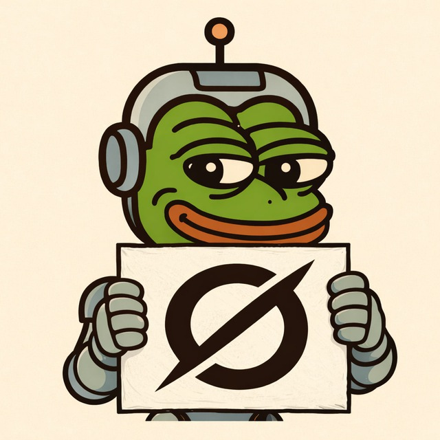

Free Every Day
Free requests refresh daily, so you can keep using Grok without committing upfront.

Your everyday Grok in Telegram: remembers context, handles images, generates videos, and delivers fast, honest answers.
Start free with daily requests. Scale up instantly with pay-as-you-go.
Free requests refresh daily, so you can keep using Grok without committing upfront.
Switch modes for image generation, video generation, expert mode, and internet search.
No forced monthly lock-in. Spend only on what you actually consume.
Powered by the official Grok API for a direct and reliable experience.
Grok Telegram Bot by Cyberfrog brings Grok directly into your regular Telegram chat. It remembers dialogue context, replies naturally, and works in everyday conversations.
You get a practical AI assistant inside the app you already use, with fast responses, multilingual support, and modes for deeper work.
Grok does not receive your personal Telegram identity as part of prompt context. Requests are processed as chat input, not as a public user feed.
Full private chat history is not stored as public data.
This is an independent community-built product by Cyberfrog. It is not affiliated with xAI or Telegram.
Yes. You can start with free daily requests. If you need more usage, switch to pay-as-you-go.
For many users, yes. If you do not use Grok heavily every day, usage-based pricing is often more efficient than a fixed monthly subscription.
Many users search for an official Grok Telegram integration. This project exists to deliver a reliable day-to-day Grok experience inside Telegram right now.
It is an independent community product with a clear focus: fast access, honest answers, and practical usability.
Start with free daily requests. Need more volume? Switch to paid usage and keep total spend aligned with real usage.
In many cases, usage-based pricing is cheaper than fixed monthly subscriptions.
Independent community product by Cyberfrog. Not affiliated with xAI, Telegram, Elon Musk, or Pavel Durov.